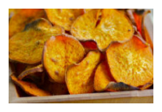
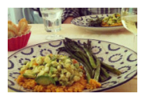
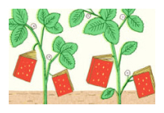

Sign up for our newsletter to receive a handpicked selection of the best stories,
recipes, and news, delivered weekly to your inbox.

2012's Best Summer Cookbooks
With the best of the season
coming from "orchards, farms and
gardens", NPR has put together
an impressive collection of 10
summer cookbooks.

How to Make Vegetable Chips
About a month ago, I ate almost
an entire box of kale chips. My
brother and I were visiting our
cousin in Brooklyn, and before a
very thoughtfully prepared vagan...

Recipes from a Sunday Supper
I could not figure out what to do
with the delectable slices of Pear
Cake that I bought home from this
wonderful Sunday supper - eat
them slowly, a little bit at...